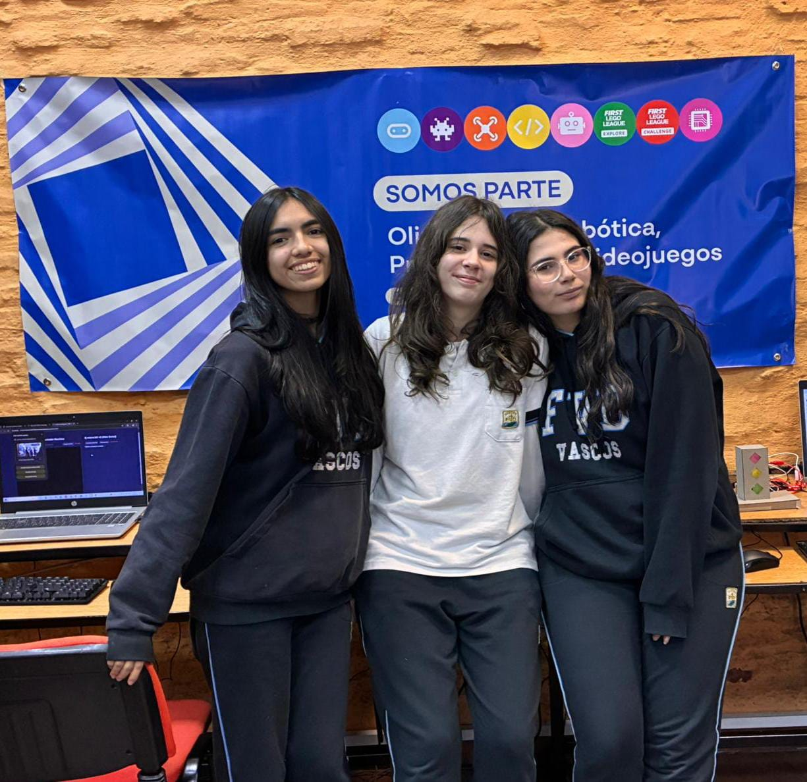

Este equipo se encarga de diseñar y programar la página web del proyecto. Registran el proceso en fotos, textos y videos para que todos tengan acceso a la información de los equipos, objetivos, progreso y mucho más de nuestro proyecto. Este grupo está conformado por tres integrantes, las cuales son Camila Colamonici, Matilda Fernandez y Victoria Ramirez.
